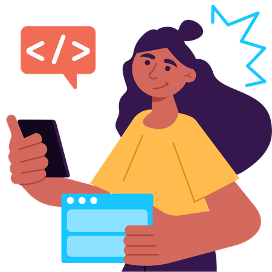
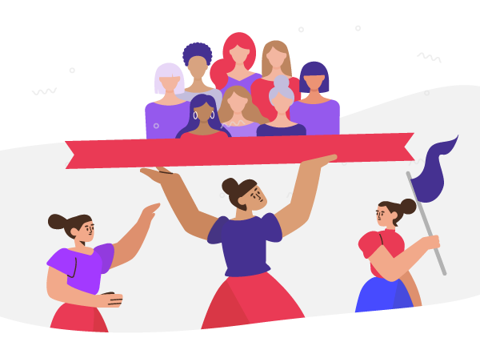

Información dispersa
Organizar los datos del emprendimiento puede ser difícil cuando están en distintos lugares.
PROYECTO DESTACADO · IDEATHON 2026
Una propuesta de innovación con inteligencia artificial para acompañar el crecimiento de los negocios de mujeres emprendedoras.

01 · EL CONTEXTO
Para impulsar un negocio primero hay que entenderlo. La propuesta partía de retos cotidianos que dificultan avanzar.
Organizar los datos del emprendimiento puede ser difícil cuando están en distintos lugares.
Se necesita una mirada clara del negocio para identificar necesidades y oportunidades.
Cada emprendimiento tiene retos propios y requiere recomendaciones pertinentes.
Usar mejor las herramientas digitales puede abrir nuevas posibilidades de crecimiento.
02 · NUESTRA SOLUCIÓN
MoveFlow acompaña al negocio en cuatro etapas conectadas.
Recopilar información sobre cada emprendimiento.
Clasificar los datos para construir un perfil empresarial.
Usar el perfil como contexto para recomendaciones con IA.
Actualizar la información y acompañar el crecimiento del negocio.
03 · GESTIÓN DE BASES DE DATOS
La propuesta conecta la gestión de información con una experiencia de IA más pertinente para cada negocio.
¿Qué la diferencia de una IA general? MoveFlow propone no empezar desde cero en cada consulta: primero recopila y organiza información del emprendimiento. Luego, el perfil empresarial sirve como contexto para orientar las recomendaciones de la app con IA. Este es el enfoque conceptual de la propuesta.
PRESENTACIÓN DEL PROYECTO
Recorre las diapositivas en orden y abre Canva para ver la presentación completa.
04 · PROTOTIPO
Una vista del prototipo conceptual de la propuesta.
Espacio pensado para mujeres emprendedoras de Latinoamérica — inspira tu próximo paso.

Recibe ideas prácticas, conexiones auténticas y herramientas con IA para impulsar tu negocio.
Permisos opcionales para mejorar tu experiencia. Puedes activarlos ahora o más tarde desde ajustes.
MoveFlow busca acompañar a mujeres emprendedoras con herramientas, conexiones e inteligencia artificial pensadas para su crecimiento.
Explorar prototipo Se abre en una pestaña nueva.05 · MI PARTICIPACIÓN
Participar en un Ideathon de cinco días significó trabajar bajo presión, transformar ideas en propuestas concretas y coordinar esfuerzos para alcanzar un objetivo común.
Durante el proceso asumí un papel activo en la organización del equipo, la evolución de la propuesta y la búsqueda de soluciones frente a los desafíos que surgieron.
Descubre mi experienciaParticipé en la construcción de la propuesta desde sus primeras etapas, ayudando a dar estructura a las ideas y a orientar la solución hacia las necesidades de las mujeres emprendedoras.
HABILIDAD PUESTA EN PRÁCTICAPensamiento estratégico EXPERIENCIA 02 · LIDERAZGO Y COORDINACIÓNDurante el desarrollo surgieron dificultades de coordinación y organización. Frente a ello, tomé la iniciativa para mejorar la comunicación, distribuir responsabilidades y ayudar a mantener al equipo enfocado en un objetivo común.
HABILIDAD PUESTA EN PRÁCTICALiderazgo colaborativo EXPERIENCIA 03 · ADAPTACIÓN BAJO PRESIÓNTrabajar con un tiempo limitado implicó priorizar actividades, adaptarnos a los cambios y encontrar maneras de seguir avanzando incluso cuando las cosas no salían según lo planeado. Esta experiencia fortaleció mi capacidad para responder ante nuevos desafíos.
HABILIDAD PUESTA EN PRÁCTICAAdaptabilidad y resolución de problemas EXPERIENCIA 04 · GESTIÓN DE INFORMACIÓNUna parte importante de nuestra propuesta consistía en recopilar información relevante de las emprendedoras, organizarla y convertirla en perfiles empresariales. Esta información serviría como contexto para nuestra aplicación de inteligencia artificial y permitiría ofrecer recomendaciones más personalizadas.
HABILIDAD PUESTA EN PRÁCTICAPensamiento analítico y orientación a los datosMás que desarrollar una idea, aprendí a construirla junto a otras personas, adaptarme a los desafíos y transformar el trabajo en equipo en resultados.
RESULTADO · IDEATHON 2026
Llegamos a semifinales compitiendo con más de 20 equipos.
Una experiencia para aprender que la innovación combina colaboración, información bien gestionada e inteligencia artificial con propósito.